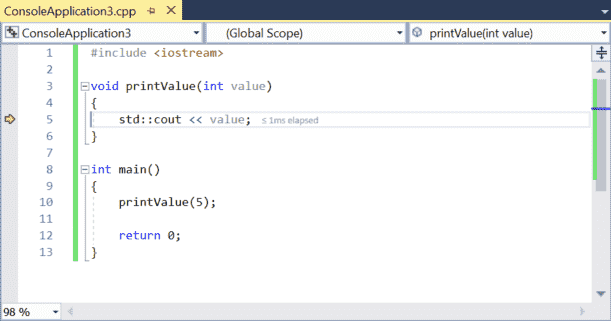
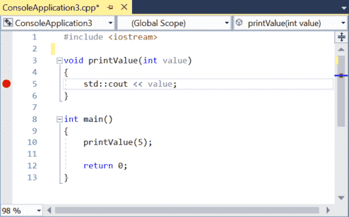
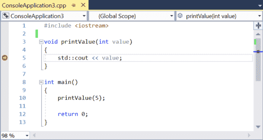

While stepping (covered in lesson 3.6 -- Using an integrated debugger: Stepping) is useful for examining each individual line of your code in isolation, in a large program, it can take a long time to step through your code to even get to the point where you want to examine in more detail.
Fortunately, modern debuggers provide more tools to help us efficiently debug our programs. In this lesson, we’ll look at some of the debugger features that let us more quickly navigate our code.
Run to cursor
The first useful command is commonly called Run to cursor. This Run to cursor command executes the program until execution reaches the statement selected by your cursor. Then it returns control to you so you can debug starting at that point. This makes for an efficient way to start debugging at a particular point in your code, or if already debugging, to move straight to some place you want to examine further.
For Visual Studio users
In Visual Studio, the run to cursor command can be accessed by right clicking a statement in your code and choosing Run to Cursor from the context menu, or by pressing the ctrl-F10 keyboard combo.
For Code::Blocks users
In Code::Blocks, the run to cursor command can be accessed by right clicking a statement in your code and choosing either Run to cursor from the context menu or Debug menu > Run to cursor, or by pressing the F4 shortcut key.
For VS Code users
In VS Code, the run to cursor command can be accessed while already debugging a program by right clicking a statement in your code and choosing Run to Cursor from the context menu.
Let’s try it using the same program we’ve been using:
#include <iostream>
void printValue(int value)
{
std::cout << value << '\n';
}
int main()
{
printValue(5);
return 0;
}Simply right click anywhere on line 5, then choose “Run to cursor”.

You will notice the program starts running, and the execution marker moves to the line you just selected. Your program has executed up to this point and is now waiting for your further debugging commands. From here, you can step through your program, run to cursor to a different location, etc…
If you run to cursor to a location that doesn’t execute, run to cursor will simply run your program until termination.
Continue
Once you’re in the middle of a debugging session, you may want to just run the program from that point forward. The easiest way to do this is to use the continue command. The continue debug command simply continues running the program as per normal, either until the program terminates, or until something triggers control to return back to you again (such as a breakpoint, which we’ll cover later in this lesson).
For Visual Studio users
In Visual Studio, the continue command can be accessed while already debugging a program via Debug menu > Continue, or by pressing the F5 shortcut key.
For Code::Blocks users
In Code::Blocks, the continue command can be accessed while already debugging a program via Debug menu > Start / Continue, or by pressing the F8 shortcut key.
For VS Code users
In VS Code, the continue command can be accessed while already debugging a program via Run menu > Continue, or by pressing the F5 shortcut key.
Let’s test out the continue command. If your execution marker isn’t already on line 5, run to cursor to line 5. Then choose continue from this point. Your program will finish executing and then terminate.
Start
The continue command has a twin brother named start. The start command performs the same action as continue, just starting from the beginning of the program. It can only be invoked when not already in a debug session.
For Visual Studio users
In Visual Studio, the start command can be accessed while not debugging a program via Debug menu > Start Debugging, or by pressing the F5 shortcut key.
For Code::Blocks users
In Code::Blocks, the start command can be accessed while not debugging a program via Debug menu > Start / Continue, or by pressing the F8 shortcut key.
For VS Code users
In VS Code, the start command can be accessed while not debugging a program via Run menu > Start Debugging, or by pressing the F5 shortcut key.
If you use the start command on the above sample program, it will run all the way through without interruption (except on VS Code, because we set stopAtEntry: true in the prior lesson). While this may seem unremarkable, that’s only because we haven’t told the debugger to interrupt the program. We’ll put this command to better use in the next section.
Breakpoints
The last topic we are going to talk about in this section is breakpoints. A breakpoint is a special marker that tells the debugger to stop execution of the program at the breakpoint when running in debug mode.
For Visual Studio users
In Visual Studio, you can set or remove a breakpoint via Debug menu > Toggle Breakpoint, or by right clicking on a statement and choosing Toggle Breakpoint from the context menu, or by pressing the F9 shortcut key, or by clicking to the left of the line number (in the light grey area).
For Code::Blocks users
In Code::Blocks, you can set or remove a breakpoint via Debug menu > Toggle breakpoint, or by right clicking on a statement and choosing Toggle breakpoint from the context menu, or by pressing the F5 shortcut key, or by clicking to the right of the line number.
For VS Code users
In VS Code, you can set or remove a breakpoint via Run menu > Toggle Breakpoint, or by pressing the F9 shortcut key, or by clicking to the left of the line number.
When you set a breakpoint, you will see a new type of icon appear. Visual Studio uses a red circle, Code::Blocks uses a red octagon (like a stop sign):

Go ahead and set a breakpoint on the line 5, as shown in the image above.
Now, choose the Start command to have the debugger run your code, and let’s see the breakpoint in action. You will notice that instead of running all the way to the end of the program, the debugger stops at the breakpoint (with the execution marker sitting on top of the breakpoint icon):

It’s just as if you’d run to cursor to this point.
Breakpoints have a couple of advantages over run to cursor. First, a breakpoint will cause the debugger to return control to you every time they are encountered (unlike run to cursor, which only runs to the cursor once each time it is invoked). Second, you can set a breakpoint and it will persist until you remove it, whereas with run to cursor you have to locate the spot you want to run to each time you invoke the command.
Note that breakpoints placed on lines that are not in the path of execution will not cause the debugger to halt execution of the code.
Let’s take a look at a slightly modified program that better illustrates the difference between breakpoints and run to cursor:
#include <iostream>
void printValue(int value)
{
std::cout << value << '\n';
}
int main()
{
printValue(5);
printValue(6);
printValue(7);
return 0;
}First, start a new debugging session and then do a run to cursor to line 5. Now choose continue. The program will continue to the end (it won’t stop on line 5 again, even though line 5 is executed twice more).
Next, place a breakpoint on line 5, then choose start. The program will stop on line 5. Now choose continue. The program will stop on line 5 a second time. Choose continue again, and it will stop a third time. One more continue, and the program will terminate. You can see that the breakpoint caused the program to stop as many times as that line was executed.
Set next statement
There’s one more debugging command that’s used fairly uncommonly, but is still at least worth knowing about, even if you won’t use it very often. The set next statement command allows us to change the point of execution to some other statement (sometimes informally called jumping). This can be used to jump the point of execution forwards and skip some code that would otherwise execute, or backwards and have something that already executed run again.
For Visual Studio users
In Visual Studio, you can jump the point of execution by right clicking on a statement and choosing Set next statement from the context menu, or by pressing the Ctrl-Shift-F10 shortcut combination. This option is contextual and only occurs while already debugging a program.
For Code::Blocks users
In Code::Blocks, you can jump the point of execution via Debug menu > Set next statement, or by right clicking on a statement and choosing Set next statement from the context menu. Code::Blocks doesn’t have a keyboard shortcut for this command.
For VS Code users
In VS Code, you can jump the point of execution by right clicking on a statement and choosing Jump to cursor from the context menu. This option is contextual and only occurs while already debugging a program.
Let’s see jumping forwards in action:
#include <iostream>
void printValue(int value)
{
std::cout << value << '\n';
}
int main()
{
printValue(5);
printValue(6);
printValue(7);
return 0;
}First, run to cursor to line 11. At this point, you should see the value of 5 in the console output window.
Now, right click on line 12, and choose set next statement. This causes line 11 to be skipped and not execute. Then choose continue to finish executing your program.
The output of your program should look like this:
5 7
We can see that printValue(6) was skipped.
This functionality can be useful in several contexts.
In our exploration of basic debugging techniques, we discussed commenting out a function as a way to determine whether that function had a role in causing an issue. This requires modifying our code, and remembering to uncomment the function later. In the debugger, there’s no direct way to skip a function, so if you decide you want to do this, using set next statement to jump over a function call is the easiest way to do so.
Jumping backwards can also be useful if we want to watch a function that just executed run again, so we can see what it is doing.
With the same code above, run to cursor to line 12. Then set next statement on line 11, and continue. The program’s output should be:
5 6 6 7
Warning
The set next statement command will change the point of execution, but will not otherwise change the program state. Your variables will retain whatever values they had before the jump. As a result, jumping may cause your program to produce different values, results, or behaviors than it would otherwise. Use this capability judiciously (especially jumping backwards).
Warning
You should not use set next statement to change the point of execution to a different function. This may result in undefined behavior, and likely a crash.
“Step back” vs jumping backwards via “Set next statement”
“Step back” rewinds the state of everything, as if you’d never gone past that point in the first place. Any changes to variable values or other program state is undone. This is essentially an “undo” command for stepping.
“Set next statement” when used to jump backwards only changes the point of execution. Any changes to variable values or other program state are not undone.
Conclusion
You now learned the major ways that you can use an integrated debugger to watch and control how your program executes. While these commands can be useful for diagnosing code flow issues (e.g. to determine if certain functions are or aren’t being called), they are only a portion of the benefit that the integrated debugger brings to the table. In the next lesson, we’ll start exploring additional ways to examine your program’s state, for which you’ll need these commands as a prerequisite. Let’s go!